Figure 5. Tangent to y=\sin x at x=\pi/4.
y = f(x) \qquad (1)
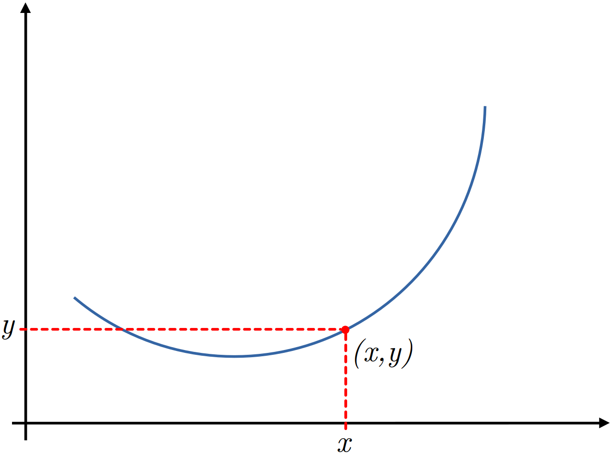
Figure 1. Graph of y=\sin x and the point (x,y) on the graph.
We are interested in finding the instantaneous change in y with respect to x.
Before looking into the instantaneous change, we look into the change in y as x changes.
This change can be computed as shown below.
y + \Delta y = f(x + \Delta x) \qquad (2)
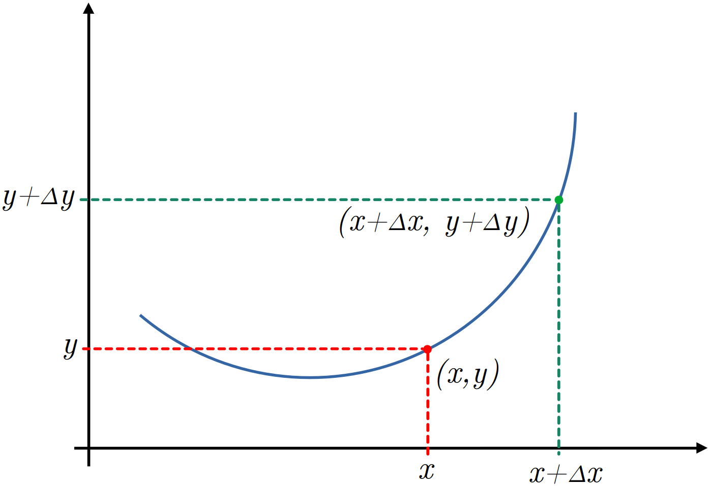
Figure 2. Graph of y=\sin x with two points shown on the graph.
We are interested in finding the change in y \left( \Delta y \right) per unit change in x \left( \Delta x \right) i.e., how much y changes per unit change in x \left( \frac{\Delta y}{\Delta x} \right).
Therefore, we modify (2) as shown below.
\begin{align} \Delta y &= f(x + \Delta x) - y \\ &= f(x + \Delta x) - f(x) \qquad \qquad \qquad (\text{Using equation }(1)) \end{align}
\frac{\Delta y}{\Delta x} = \frac{f(x + \Delta x) - f(x)}{\Delta x}
\frac{\Delta y}{\Delta x} = \frac{f(x + \Delta x) - f(x)}{(x + \Delta x) - \Delta x} \qquad (3)
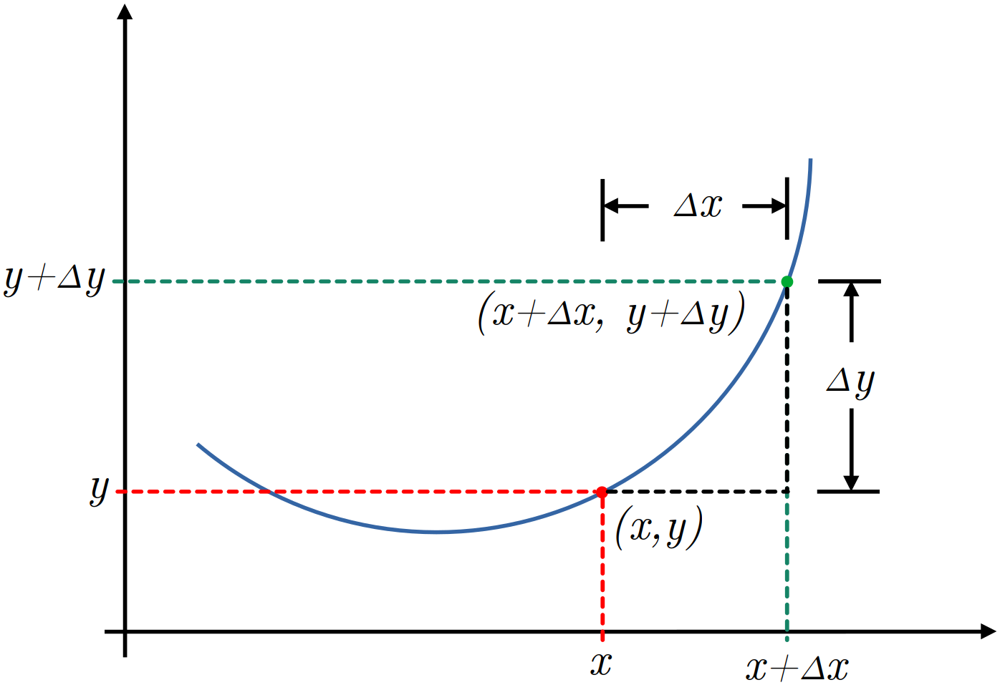
Figure 3. Graph of y=\sin x with changes \Delta x and \Delta y.
\begin{align} y_1 &= f(x) \\ y_2 &= f(x + \Delta x) \\ x_1 &= \Delta x \\ x_2 &= x + \Delta x \end{align}
\frac{\Delta y}{\Delta x} = \frac{f(x + \Delta x) - f(x)}{(x + \Delta x) - \Delta x} = \frac{y_2 - y_1}{x_2 - x_1} \qquad (4)
It means, equation (3) represents the slope of the line.
Note that the points on the right hand side of equation (3) are the coordinates of points P and Q in figure 2.
These points intersect at two different points on the graph, therefore the line passing through these points is the secant line and the slope of the line in equation (3) or (4) is the slope of the secant line.
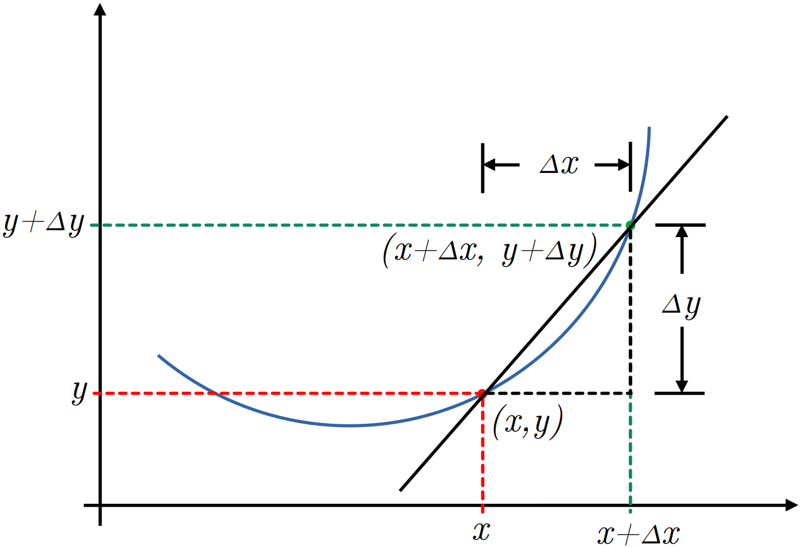
Figure 4. Graph of y=\sin x and the secant line through two points.
In real physical world, we deal with problems involving continuously varying quantities and in these problems we need instantaneous changes in the dependent variable with respect to (per unit change) the independent variable.
Let’s represent the small change with \delta and this change is so small that \delta \rightarrow 0.
Therefore, we modify equation (3) as shown below.
\lim_{\delta x \rightarrow 0} \frac{\delta y}{\delta x} = \lim_{\delta x \rightarrow 0} \frac{f(x + \delta x) - f(x)}{\delta x} \qquad (5)
(x + \delta x) - x \approx 0
It confirms that point P approaches point Q and therefore secant line becomes the tangent line as shown in figure.
This gives the instantaneous change.
In short form we write
\lim_{\delta x \rightarrow 0} \frac{\delta y}{\delta x} = \frac{dy}{dx}
\frac{dy}{dx} = \lim_{\delta x \rightarrow 0} \frac{f(x + \delta x) - f(x)}{\delta x} \qquad (6)
Suppose the angle between the tangent line with the horizontal is \theta, then the angle between the tangent line and the line \delta x is also \theta, however the triangle is a micro triangle.
In the micro triangle, we have the following trigonometric identity.
\tan \theta = \frac{f(x + \delta x) - f(x)}{\delta x}
\tan \theta = \lim_{\delta x \rightarrow 0} \frac{f(x + \delta x) - f(x)}{\delta x} \qquad (7)
\tan \theta = \frac{dy}{dx}
This is because, \tan \theta is also the slope of line (hypotenuse).
Finally, equation (6) says that we can find derivative along the curve, but in real world problems we need derivatives at fixed points e.g., at t = 5 or x=3 etc.
y = \sin x
\frac{dy}{dx} = \cos x
Instead of using the first principle, we are interested in derivatives at fixed points.
For a complete understanding, we consider the following points.
x = \frac{\pi}{4}, \frac{\pi}{2}, \frac{3\pi}{4}, \frac{5\pi}{4}, \frac{3\pi}{2}, \frac{7\pi}{4}
y = \sin (\pi/4) = 0.707
So, the point is (x, y) = (\pi/4, 0.707).
Now,
m = \frac{dy}{dx} = \cos x = \cos (\pi/4) = 0.707
y - y_1 = m(x - x_1)
y - 0.707 = 0.707 (x - \pi/4)
y - 0.707 = -0.707(\pi/4)
y = 0.707 -0.707(\pi/4) = 0.1513 = c
y = 0.707x + 0.1513
At x=0, y = 0.1513 and at x=\pi/2, y=1.262.
Therefore, we have two points (x_1, y_1) = (0, 0.1513) and (x_2, y_2) = (\pi/2, 1.262).
Joining these two points will automatically draw the tangent to the graph of y=\sin x at x=\pi/4.
Figure 5. Tangent to y=\sin x at x=\pi/4.
import numpy as np
import matplotlib.pyplot as plt
def func(x):
return np.sin(x)
def dydx(x):
return np.cos(x)
def newy(x, m, c):
return m*x + c
x = np.linspace(0, 2*np.pi, 1000)
y = func(x)
x1 = np.deg2rad(float(input("Enter the angle (in degrees): ")))
y1 = func(x1)
m = dydx(x1)
c = y1 - m*x1
xl = x1 - np.pi/4
xh = x1 + np.pi/4
yl = newy(xl, m, c)
yh = newy(xh, m, c)
plt.figure(figsize=(8, 6))
plt.plot(x, y, '-k')
plt.plot([xl, xh], [yl, yh], '--r')
plt.plot([-0.10, 2*np.pi],[0, 0], '-b')
plt.plot([0, 0], [-1.1, 1.1], '-b')
plt.scatter(x1, y1, s=50, c='r')
plt.xlim([-0.10, 2*np.pi])
plt.ylim([-1.1, 1.1])
plt.xlabel(r'$\theta$', size=14, weight='bold')
plt.ylabel('Functions', size=14, weight='bold')
plt.xticks(size=14, weight='bold')
plt.yticks(size=14, weight='bold')
plt.grid(axis='both')
plt.tight_layout()
plt.show()We see that the slope of the tangent line at x=\pi/4 is m=0.707.
We want to confirm this slope using \tan \theta.
We can find \theta using dot product.
Let’s first find out the vectors.
One point on the tangent line is the y-intercept and the coordinates of this point are (0.0, 0.1513).
The second point on the tangent line is (x_2 = \pi/2, y_2 = 0.707*\pi/2 + 0.1513) = (1.5708, 1.2619).
The vector, say \mathbf a formed by these two points is \mathbf a = \langle 1.5708-0.0, 1.2619-0.1513 \rangle = \langle 1.5708, 1.1106 \rangle.
The vector \mathbf b can be drawn with (0, 0) and any point on x-axis e.g., (\pi/2, 0.0) = (1.5708, 0.0).
The vector formed by these two points is \mathbf b = \langle 1.5708-0, 0.0-0.0 \rangle = \langle 1.5708, 0.0 \rangle.
Using the two vectors \mathbf a = 1.5708 \mathbf i + 1.1106 \mathbf j and \mathbf b = 1.5708 \mathbf i + 0 \mathbf j, we can find the angle between these two vectors (tangent line and x-axis) using dot product.
So,
\theta = \cos ^{-1} \frac{\mathbf a \cdot \mathbf b}{|\mathbf a| |\mathbf b|}
\theta = \cos ^{-1} \frac{(1.5708 \mathbf i + 1.1106 \mathbf j)\cdot(1.5708 \mathbf i + 0 \mathbf j)}{\sqrt{1.5708^2 + 1.1106^2} \sqrt{1.5708^2 + 0^2}} = 0.615427 \text{ radian}
m = \tan(0.615427) = 0.707
We see that slope obtained from derivative and trigonometry are the same.
We can draw the tangent line as already discussed.
The Python program to compute angle between the given vectors and then computing slope using \tan \theta is given below.
import numpy as np
m = np.cos(np.pi/4)
c = 0.1513
x1 = 0.0
y1 = m*x1 + c
x2 = np.pi/2
y2 = m*x2 + c
pi = np.array([x1, y1])
pf = np.array([x2, y2])
a = pf - pi
b = np.array([np.pi/2, 0.0])
adotb = np.dot(a, b)
am = np.linalg.norm(a)
bm = np.linalg.norm(b)
term = adotb/(am*bm)
theta = np.arccos(term)
print(np.tan(theta))For x=\pi/2, y=\sin \pi/2 = 1.
The slope at x=\pi/2 is
m = \cos \pi/2 = 0
y = mx + c \implies y = c = 1
y = 1

Figure 6. Tangent to y=\sin x at x=\pi/2.

Figure 7. Tangent to y=\sin x at x=3\pi/4.

Figure 8. Tangent to y=\sin x at x=5\pi/4.

Figure 9. Tangent to y=\sin x at x=3\pi/2.

Figure 10. Tangent to y=\sin x at x=7\pi/4.
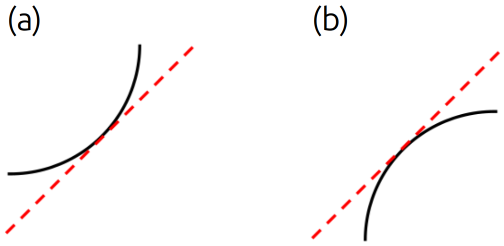
Figure 11. Shape of curve having positive slope.
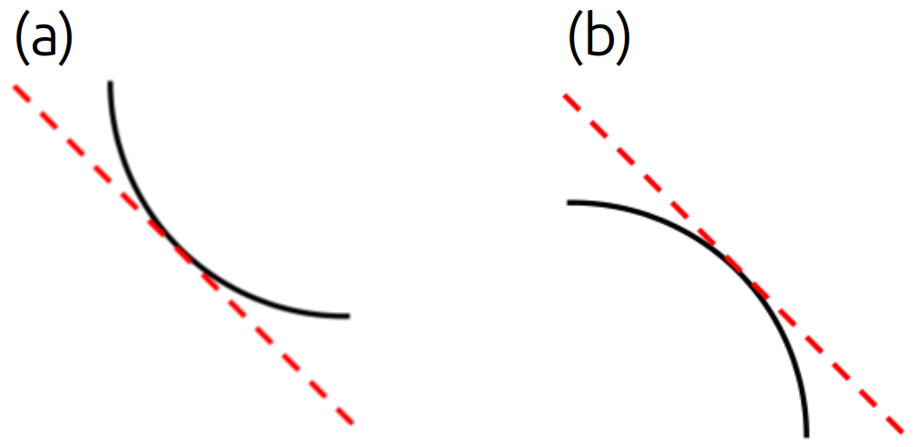
Figure 12. Shape of curve having negative slope.
f(x) = \frac{1}{\sqrt{2\pi}}e^{\frac{-x^2}{2}} \qquad (8)
What is the slope of tangent line at x = -2.0?
In order to find the slope of tangent line to the curve of equation (8), we find the derivative of f(x) at x=-2.0.
f^{\prime}(x) = -\frac{x}{\sqrt{2\pi}}e^{\frac{-x^2}{2}} \qquad (9)
f^{\prime}(x) \big|_{x=-2.0} = -\frac{(-2.0)}{\sqrt{2\pi}}e^{\frac{-(-2.0^2)}{2}} = 0.1080
The slope of tangent line to the curve of normal distribution function at x=-2.5 is positive (0.1080).
What will be the shape of curve at x=-2.5?
f^{\prime\prime}(x) = \frac{x^2-1}{\sqrt{2\pi}}e^{\frac{-x^2}{2}} \qquad (10)
This time, we calculate the second derivative at the following four points.
f^{\prime\prime}(-2.0) = \frac{(-2.0)^2-1}{\sqrt{2\pi}}e^{\frac{-(-2.0)^2}{2}} = 0.1620
f^{\prime\prime}(-0.4) = \frac{(-0.4)^2-1}{\sqrt{2\pi}}e^{\frac{-(-0.4)^2}{2}} = -0.3093
f^{\prime\prime}(0.4) = \frac{(0.4)^2-1}{\sqrt{2\pi}}e^{\frac{-(0.4)^2}{2}} = -0.3093
f^{\prime\prime}(2.0) = \frac{(2.0)^2-1}{\sqrt{2\pi}}e^{\frac{-(2.0)^2}{2}} = 0.1620
Looking at the tangents at the above four points, we conclude the following points.
If the second derivative is positive at some point x=a, the curve will lie above the tangent line or in other words, the tangent line will be below the curve.
If the second derivative is negative at some point x=a, the curve will lie below the tangent line or in other words, the tangent line will be above the curve.
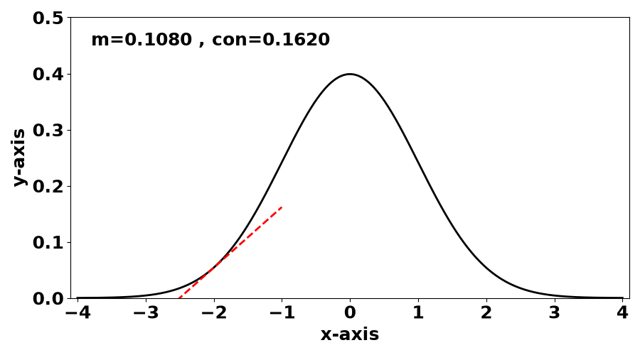
Figure 13. Slope and concavity at x=-2.
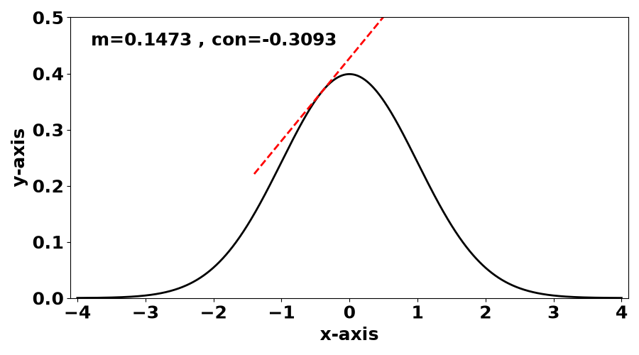
Figure 14. Slope and concavity at x=-0.4.
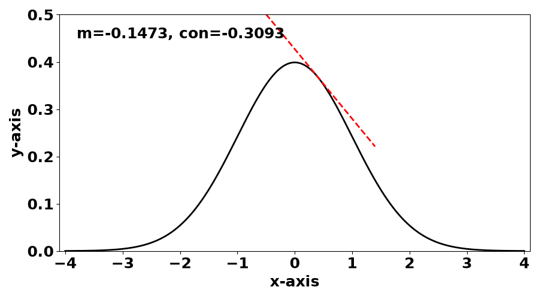
Figure 15. Slope and concavity at x=0.4.
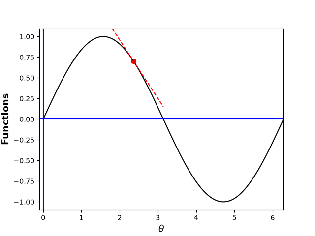
Figure 16. Slope and concavity at x=2.
import numpy as np
import matplotlib.pyplot as plt
def snd(x):
return 1/(np.sqrt(2*np.pi))*np.exp(-x**2/2)
def sndd(x):
return -x/(np.sqrt(2*np.pi))*np.exp(-x**2/2)
def snddd(x):
return (x**2 - 1)/(np.sqrt(2*np.pi))*np.exp(-x**2/2)
x = np.linspace(-4, 4, 1000)
y = snd(x)
xps = np.array([-2.0, -0.4, 0.4, 2.0])
yps = snd(xps)
mps = sndd(xps)
cops = snddd(xps)
cps = yps - mps*xps
print(mps)
print(cops)
for i in range(len(xps)):
plt.figure(figsize=(9, 5))
plt.plot(x, y, '-k', linewidth=2)
plt.plot(
[xps[i]-1, xps[i]+1],
[mps[i]*(xps[i]-1)+cps[i], mps[i]*(xps[i]+1)+cps[i]],
'--r',
linewidth=2
)
plt.xlabel("x-axis", size=18, weight='bold')
plt.ylabel("y-axis", size=18, weight='bold')
plt.xticks(size=18, weight='bold')
plt.yticks(size=18, weight='bold')
plt.xlim([-4.1, 4.1])
plt.ylim([0, 0.5])
plt.text(-3.8, 0.45, f"m={mps[i]:<7.4f}, con={cops[i]:.4f}",
size=18, weight='bold')
plt.tight_layout()
plt.savefig(f"slope_{i:d}.png")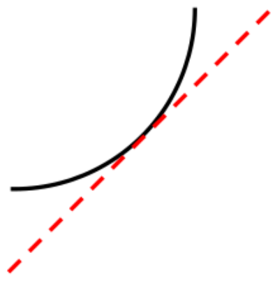
Figure 17. Shape of curve with m>0 and Concavity>0.
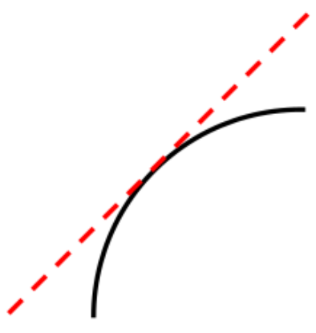
Figure 18. Shape of curve with m>0 and Concavity< 0.
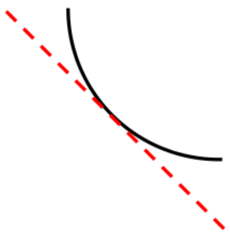
Figure 19. Shape of curve with m< 0 and Concavity>0.
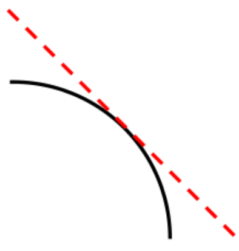
Figure 20. Shape of curve with m< 0 and Concavity< 0.